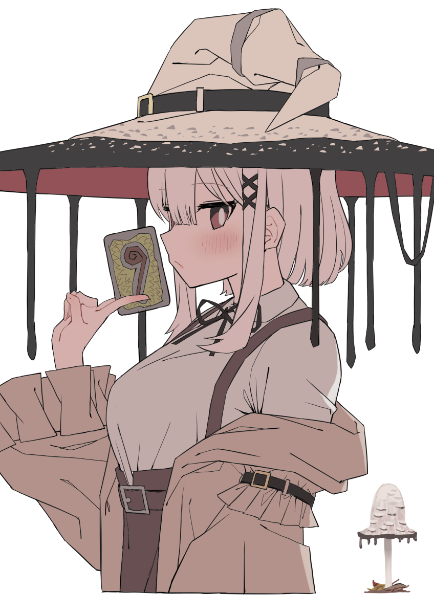
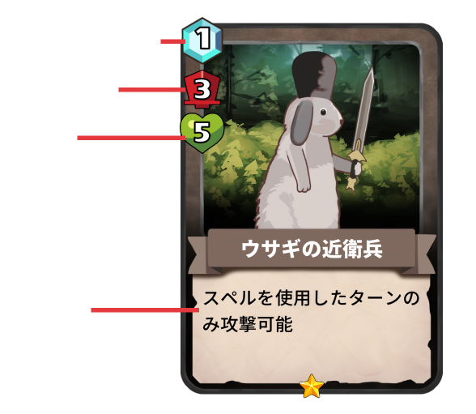
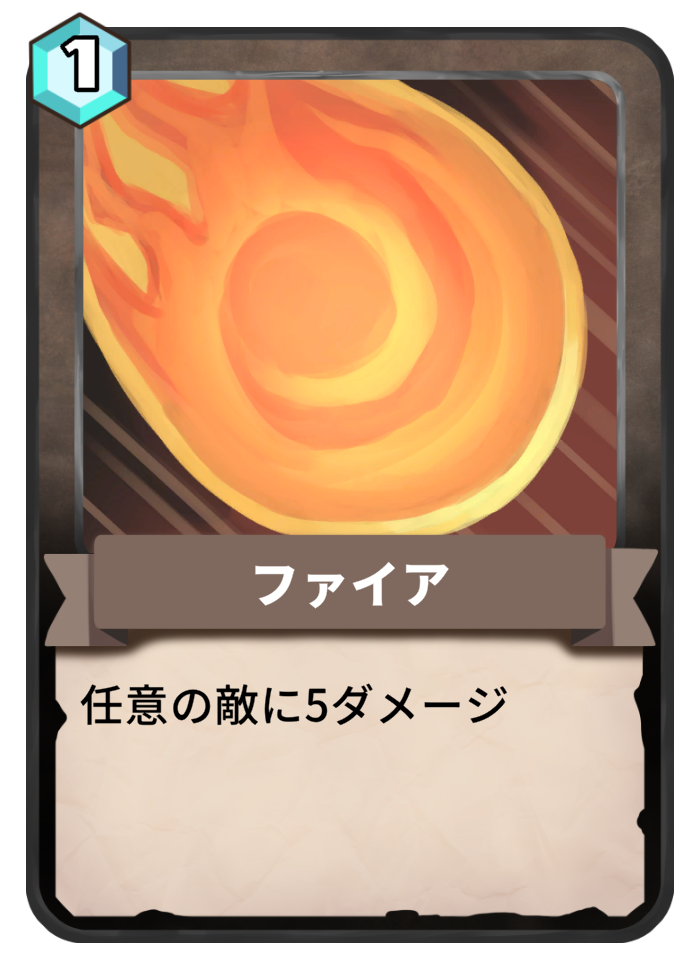
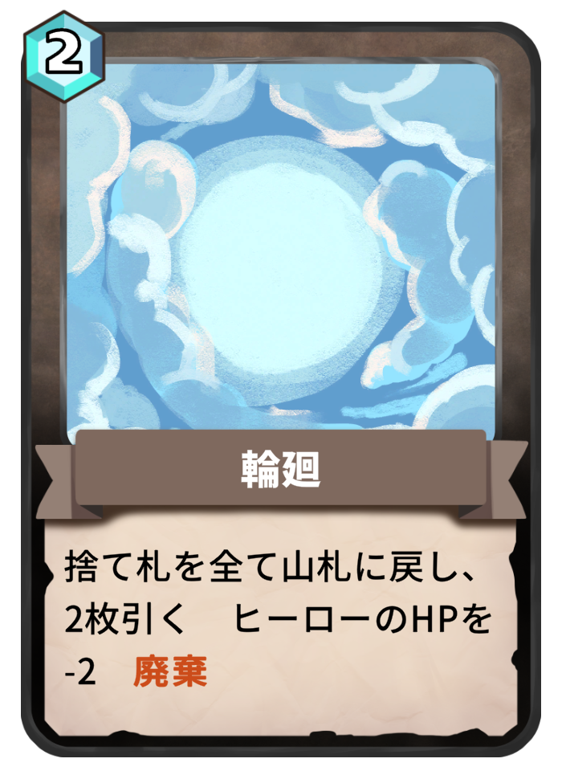
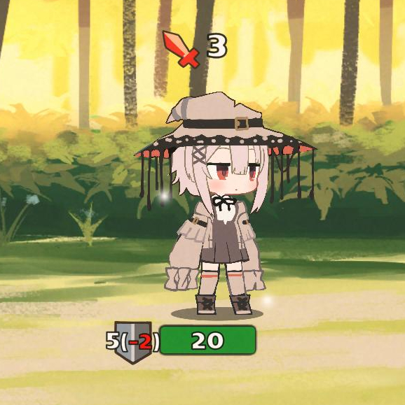
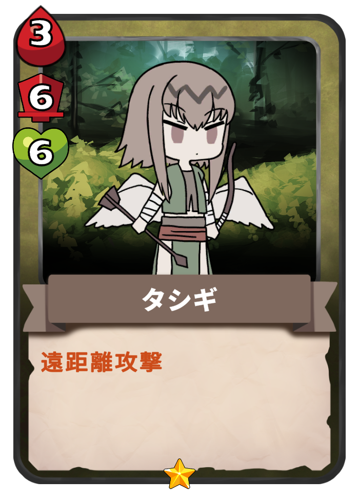
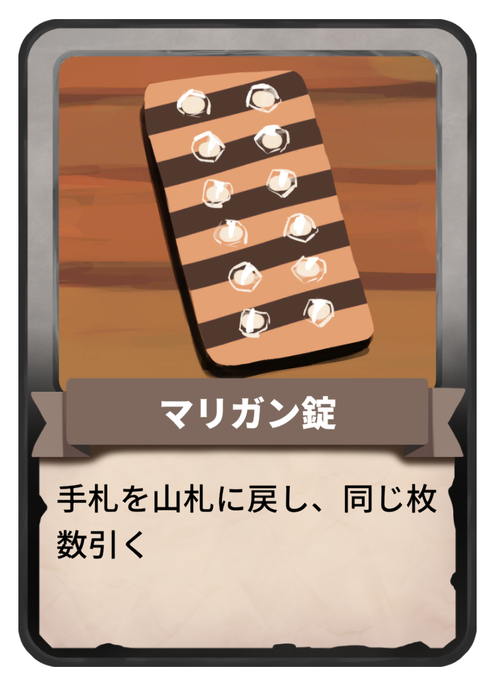

ゲーム概要

主人公のヒトヨは、討伐対象の魔物を倒すための旅に出る。

戦闘はターン制で、カードを使って行う。
カードは毎ターン山札から2枚引くことができる。
このゲームの最大の特徴は、場に召喚すると毎ターン攻撃してくれる『ファントム』という存在だ。

ファントム
ファントムはカードを使って召喚する。

召喚する際は、既に場に存在しているユニット（主人公や既に出したファントム）の前後や間など、どの位置に召喚するかを選択できる。

敵がどこに攻撃してくるかは予め表示されている。 例えば、通常攻撃であれば先頭、遠距離攻撃であれば最後尾へ攻撃してくる。 ファントムを「敵が攻撃してくる場所に配置して他のユニットを守る」か、 「敵が攻撃してこない場所に配置してダメージソースにする」か、適切な判断をすることが重要だ。
スペル
スペルは使用すると即座に効果を発動し、捨て札に送られる。
 
山札がない状態でカードを引くと、手札に『輪廻』という特殊なスペルが生成される。 このゲームでは山札がなくなっても自動で捨て札のカードが回収されることはなく、回収には輪廻を使う必要がある。 輪廻はコストが必要でHPも失う為、山札のカードが少なすぎると不利になる。ただし、場合によっては少ないカードでデッキを回すことが有利になる場合もある。
主人公

主人公のヒトヨは、攻撃を受けるとまずシールドが削られ、シールドがなければHPにダメージを受ける。 シールドは戦闘終了後に回復する為、戦闘開始直後はヒトヨで攻撃を受けてファントムを守る選択が有効である場合が多い。 ヒトヨのHPが0になったらゲームオーバーとなり、再びプレイする時は最初からのスタートとなる。
ポーチ

ポーチはこのゲーム独自のいつでも使用できるカードゾーンだ。 ポーチには道中で手に入った「上級ファントム」と「アイテム」を入れることができる。 ポーチに入れることのできるカードには上限枚数がある。（本編は9枚）
上級ファントム
「上級ファントム」は場のファントムをコストとして捨て札に送って召喚できるファントムだ。

左上の血のアイコンは、合計いくつのコストを持つファントムを捨て札にする必要があるかを示している。 上級ファントムは強力なステータスや効果を持ったものが多く、どういった戦略のデッキを組むかの中核となる。
アイテム
「アイテム」は使い切りのカードで、一度使用すると消滅してしまう。

アイテムはコストなしで使用できる。山札からの引きが悪い時や、もう一歩足りない時などに役に立ってくれるだろう。
ポーチの上限枚数がある中で、上級ファントムとアイテムをそれぞれ何枚入れるのか、その選択はプレイヤーに委ねられている。
ゲームモード
ゲームは『プロローグ』『本編』『ラン』の3種類がある。
『プロローグ』ではゲームの基本的なルールを知ることができる。
『本編』ではメインのステージを遊ぶことができる。
『ラン』は本編を難しくしたモードで、全10段階の難易度が用意されている。
ランの各レベルをクリアすることで、ショートストーリーを見ることができるぞ。

Steamストアページ
Return